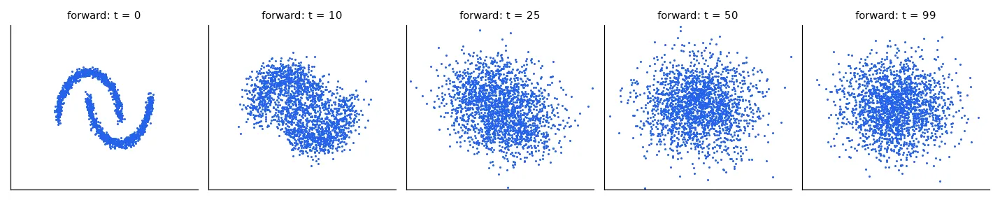
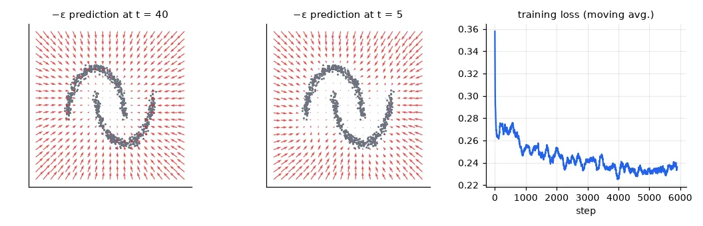
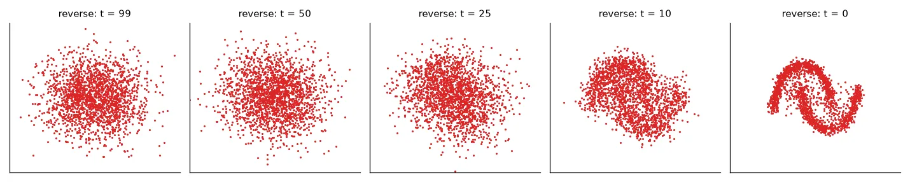

Learning a distribution#
Every model so far learnt \(p(y \mid \mathbf{x})\): given an input, predict a label. A generative model learns \(p(\mathbf{x})\) itself, well enough to draw new samples from it — new faces, new handwriting, new images that match a sentence. The difficulty is that \(p(\mathbf{x})\) over images is an absurdly complicated distribution in a space with hundreds of thousands of dimensions.
Over the last decade the leading approaches were GANs (a generator against a discriminator), VAEs (an autoencoder with a probabilistic bottleneck) and diffusion models, which now power almost every image generator. Their idea is disarmingly simple: destroying data with noise is easy, so learn to undo it one small step at a time.
We work in 2-D, where the whole process fits in a scatter plot and trains on a CPU in half a minute: the target distribution is the two-moons shape.
data, _ = make_moons(n_samples=10000, noise=0.05, random_state=0)
x0_all = torch.tensor((data - data.mean(0)) / data.std(0), dtype=torch.float32) # (10000, 2), zero mean, unit std
The forward process: adding noise#
Over \(T\) steps, mix in a little Gaussian noise at each step: \(\mathbf{x}_t = \sqrt{1 - \beta_t}\,\mathbf{x}_{t-1} + \sqrt{\beta_t}\,\boldsymbol{\epsilon}\), with a noise schedule \(\beta_1 < \dots < \beta_T\). Because Gaussians compose, we can jump directly to any step:
@dataclass
class Config:
T: int = 100 # number of noise levels
beta_start: float = 1e-4
beta_end: float = 0.2
steps: int = 6000 # training iterations
batch: int = 256
lr: float = 2e-3
hidden: int = 128
cfg = Config()
betas = torch.linspace(cfg.beta_start, cfg.beta_end, cfg.T) # (T,) noise added at each step
alphas = 1 - betas
alpha_bar = torch.cumprod(alphas, 0) # (T,) fraction of signal left after t steps
def q_sample(x0, t, noise):
"""Jump straight to step t: x_t = sqrt(abar_t) x0 + sqrt(1 - abar_t) noise."""
ab = alpha_bar[t][:, None] # (B, 1)
return ab.sqrt() * x0 + (1 - ab).sqrt() * noise
print("signal left: t=0 %.3f, t=T/4 %.3f, t=T/2 %.3f, t=T %.4f"
% tuple(alpha_bar[[0, cfg.T // 4, cfg.T // 2, cfg.T - 1]].sqrt().tolist()))
signal left: t=0 1.000, t=T/4 0.715, t=T/2 0.263, t=T 0.0046
After \(T\) steps less than 0.5% of the signal is left: \(\mathbf{x}_T\) is indistinguishable from pure noise. That is the point — we know how to sample pure noise.

The model: predict the noise#
To reverse a step we need to know which direction leads back to the data. The DDPM paper (Ho et al., 2020) showed that a good way to learn it is to train a network \(\boldsymbol\epsilon_\theta(\mathbf{x}_t, t)\) to predict the noise that was added — a plain regression with the squared error of lesson 02:
The same network handles every noise level, so it receives \(t\) as an input, encoded with sines and cosines of several frequencies (the trick transformers use for positions).
class Denoiser(nn.Module):
"""eps_theta(x_t, t): predicts the noise that was added. t enters as sinusoidal features."""
def __init__(self, hidden):
super().__init__()
self.freqs = torch.exp(torch.linspace(0, np.log(100), 16)) # (16,)
self.net = nn.Sequential(nn.Linear(2 + 32, hidden), nn.SiLU(), nn.Linear(hidden, hidden), nn.SiLU(),
nn.Linear(hidden, hidden), nn.SiLU(), nn.Linear(hidden, 2))
def forward(self, x, t):
tt = (t.float() / cfg.T)[:, None] * self.freqs # (B, 16)
return self.net(torch.cat([x, tt.sin(), tt.cos()], dim=1)) # (B, 2)
model = Denoiser(cfg.hidden)
opt = torch.optim.Adam(model.parameters(), lr=cfg.lr)
losses = []
for step in range(cfg.steps):
x0 = x0_all[torch.randint(0, len(x0_all), (cfg.batch,))] # (B, 2) clean samples
t = torch.randint(0, cfg.T, (cfg.batch,)) # a random noise level each
noise = torch.randn_like(x0)
loss = nn.functional.mse_loss(model(q_sample(x0, t, noise), t), noise) # learn to predict the noise
opt.zero_grad()
loss.backward()
opt.step()
losses.append(loss.item())
print("training loss: first 100 steps %.3f, last 500 steps %.3f" % (np.mean(losses[:100]), np.mean(losses[-500:])))
training loss: first 100 steps 0.358, last 500 steps 0.235
The loss never goes to zero, and it shouldn't: at high noise levels the noise is genuinely unpredictable. What the network learns is the expected noise given \(\mathbf{x}_t\), which is (up to a factor) the score \(\nabla_\mathbf{x}\log p_t(\mathbf{x})\) — the direction in which the noisy data density increases.

Sampling: walk back from noise#
Start from \(\mathbf{x}_T \sim \mathcal N(0, I)\) and apply, for \(t = T, \dots, 1\),
remove a bit of the predicted noise, then add back a smaller amount of fresh noise (except at the last step).
@torch.no_grad()
def sample(n, keep=(99, 75, 50, 25, 10, 0)):
"""Ancestral sampling: start from pure noise and remove a little of the predicted noise T times."""
x = torch.randn(n, 2)
snapshots = {}
for t in reversed(range(cfg.T)):
tt = torch.full((n,), t)
eps = model(x, tt)
mean = (x - betas[t] / (1 - alpha_bar[t]).sqrt() * eps) / alphas[t].sqrt()
x = mean + (betas[t].sqrt() * torch.randn_like(x) if t > 0 else 0)
if t in keep:
snapshots[t] = x.clone()
return x, snapshots
gen, snaps = sample(2000)
real = x0_all[:2000]
def mmd(a, b, s=0.5):
"""Maximum mean discrepancy with a Gaussian kernel: 0 when two sample sets have the same distribution."""
k = lambda x, y: torch.exp(-torch.cdist(x, y) ** 2 / (2 * s ** 2)).mean()
return (k(a, a) + k(b, b) - 2 * k(a, b)).item()
print("MMD generated vs real: %.4f | pure noise vs real: %.4f | two real halves: %.4f"
% (mmd(gen, real), mmd(torch.randn(2000, 2), real), mmd(x0_all[2000:4000], real)))
MMD generated vs real: 0.0074 | pure noise vs real: 0.0476 | two real halves: 0.0006

How good are the samples? Evaluating generative models is hard — there is no label to compare with. Here we measure the maximum mean discrepancy between generated and real points: zero when the two sets come from the same distribution. Our samples are far closer to the data than noise is (0.007 vs 0.048), but not as close as two halves of the real data (0.0006): the moons come out slightly too thick. More training steps, a bigger network or more noise levels close the gap. For images the standard metric is the FID, the same idea computed on the features of a pretrained CNN.
From two moons to Stable Diffusion#
Three additions take this exact algorithm to text-to-image generation:
- A U-Net instead of an MLP. For images, \(\boldsymbol\epsilon_\theta\) is a convolutional encoder–decoder with skip connections (and attention layers), which predicts a noise image of the same size as its input.
- Diffusion in a latent space. Running 50 network evaluations on a 512×512×3 image is expensive. Latent diffusion (Rombach et al., 2022) first trains an autoencoder that compresses an image 8× in each direction into a 64×64×4 latent, runs the diffusion there, and decodes the result once at the end.
- Conditioning on text. A text encoder (CLIP) turns the prompt into a sequence of vectors that the U-Net reads through cross-attention, so it learns \(\boldsymbol\epsilon_\theta(\mathbf{x}_t, t, \text{text})\). At sampling time classifier-free guidance extrapolates from the unconditional prediction towards the conditional one, \(\hat{\boldsymbol\epsilon} = \boldsymbol\epsilon_\theta(\mathbf{x}_t, t, \varnothing) + w\,(\boldsymbol\epsilon_\theta(\mathbf{x}_t, t, \text{text}) - \boldsymbol\epsilon_\theta(\mathbf{x}_t, t, \varnothing))\); the
guidance_scale\(w\) trades diversity for prompt adherence.
The UFRN class used the pretrained model through Hugging Face diffusers. The script below needs a GPU (a free Colab T4 is enough), so unlike the rest of the course it is not run when these pages are built:
parser = argparse.ArgumentParser()
parser.add_argument("prompt", nargs="?", default="a robotic boat on a river at sunset, watercolor")
parser.add_argument("--model", default="stabilityai/stable-diffusion-2-1-base") # any SD 1.x/2.x checkpoint
parser.add_argument("--steps", type=int, default=25)
parser.add_argument("--guidance", type=float, default=7.5)
parser.add_argument("--seed", type=int, default=0)
parser.add_argument("--out", default="generated.png")
args = parser.parse_args()
pipe = StableDiffusionPipeline.from_pretrained(args.model, torch_dtype=torch.float16)
pipe.scheduler = DPMSolverMultistepScheduler.from_config(pipe.scheduler.config) # good images in ~25 steps
pipe = pipe.to("cuda")
generator = torch.Generator("cuda").manual_seed(args.seed) # same seed + prompt = same image
image = pipe(args.prompt, num_inference_steps=args.steps, guidance_scale=args.guidance,
generator=generator).images[0] # a PIL image, 512x512 for the base model
image.save(args.out)
print("saved", args.out)
The picture is a good summary of what these models do well and badly. The image is clean and coherent, because the model learnt the distribution of images extremely well; the composition the prompt asked for is ignored, because a frozen CLIP text encoder captures "dog" and "suit" as concepts much better than how they should be combined. Newer models (larger text encoders, transformers instead of U-Nets) follow prompts much better — the diffusion part is still the same loop as above.
Exercises#
- Reduce \(T\) to 20 with the same \(\beta_{\text{end}}\). What happens to the samples? Then try DDIM sampling: a deterministic update that skips steps (
x0_predfrom \(\boldsymbol\epsilon_\theta\), then jump to \(t - k\)). - Make the model conditional: train on both moons with the moon index as an extra input (an embedding added to the time features), then generate only the upper moon. Add classifier-free guidance by dropping the label 10% of the time during training.
- Train the same DDPM on 28×28 MNIST digits with a small U-Net (two downsampling and two upsampling blocks). On a CPU, keep it to a few epochs on one digit class.